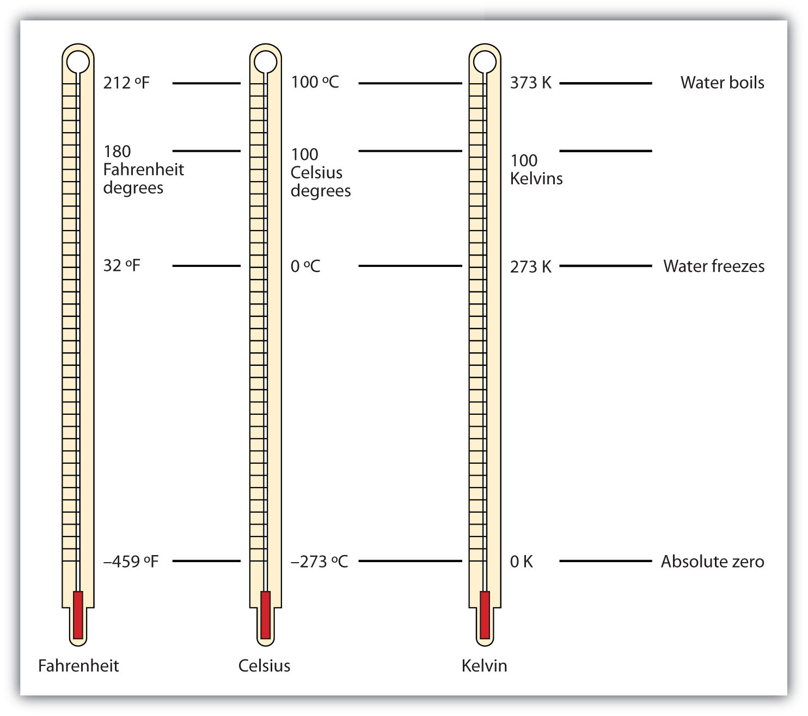

There are other units in chemistry that are important, and we will cover others in the course of the entire book. One of the fundamental quantities in science is temperature. TemperatureA measure of the average amount of kinetic energy a system contains. is a measure of the average amount of energy of motion, or kinetic energy, a system contains. Temperatures are expressed using scales that use units called degreesThe unit of temperature scales., and there are several temperature scales in use. In the United States, the commonly used temperature scale is the Fahrenheit scale (symbolized by °F and spoken as “degrees Fahrenheit”). On this scale, the freezing point of liquid water (the temperature at which liquid water turns to solid ice) is 32°F, and the boiling point of water (the temperature at which liquid water turns to steam) is 212°F.
Science also uses other scales to express temperature. The Celsius scale (symbolized by °C and spoken as “degrees Celsius”) is a temperature scale where 0°C is the freezing point of water and 100°C is the boiling point of water; the scale is divided into 100 divisions between these two landmarks and extended higher and lower. By comparing the Fahrenheit and Celsius scales, a conversion between the two scales can be determined:
Using these formulas, we can convert from one temperature scale to another. The number 32 in the formulas is exact and does not count in significant figure determination.
Solution
Using the first formula from above, we have
Using the second formula from above, we have
Test Yourself
Answers
The fundamental unit of temperature (another fundamental unit of science, bringing us to four) in SI is the kelvinThe fundamental unit of temperature in SI. (K). The Kelvin temperature scale (note that the name of the scale capitalizes the word Kelvin, but the unit itself is lowercase) uses degrees that are the same size as the Celsius degree, but the numerical scale is shifted up by 273.15 units. That is, the conversion between the Kelvin and Celsius scales is as follows:
K = °C + 273.15 °C = K − 273.15For most purposes, it is acceptable to use 273 instead of 273.15. Note that the Kelvin scale does not use the word degrees; a temperature of 295 K is spoken of as “two hundred ninety-five kelvins” and not “two hundred ninety-five degrees Kelvin.”
The reason that the Kelvin scale is defined this way is because there exists a minimum possible temperature called absolute zeroThe minimum possible temperature, labeled 0 K (zero kelvins).. The Kelvin temperature scale is set so that 0 K is absolute zero, and temperature is counted upward from there. Normal room temperature is about 295 K, as seen in the following example.
If normal room temperature is 72.0°F, what is room temperature in degrees Celsius and kelvins?
Solution
First, we use the formula to determine the temperature in degrees Celsius:
Then we use the appropriate formula above to determine the temperature in the Kelvin scale:
K = 22.2°C + 273.15 = 295.4 KSo, room temperature is about 295 K.
Test Yourself
What is 98.6°F on the Kelvin scale?
Answer
310.2 K
Figure 2.9 "Fahrenheit, Celsius, and Kelvin Temperatures" compares the three temperature scales. Note that science uses the Celsius and Kelvin scales almost exclusively; virtually no practicing chemist expresses laboratory-measured temperatures with the Fahrenheit scale. (In fact, the United States is one of the few countries in the world that still uses the Fahrenheit scale on a daily basis. The other two countries are Liberia and Myanmar [formerly Burma]. People driving near the borders of Canada or Mexico may pick up local radio stations on the other side of the border that express the daily weather in degrees Celsius, so don’t get confused by their weather reports.)
Figure 2.9 Fahrenheit, Celsius, and Kelvin Temperatures
A comparison of the three temperature scales.
DensityA physical property defined as a substance’s mass divided by its volume. is a physical property that is defined as a substance’s mass divided by its volume:
Density is usually a measured property of a substance, so its numerical value affects the significant figures in a calculation. Notice that density is defined in terms of two dissimilar units, mass and volume. That means that density overall has derived units, just like velocity. Common units for density include g/mL, g/cm3, g/L, kg/L, and even kg/m3. Densities for some common substances are listed in Table 2.2 "Densities of Some Common Substances".
Table 2.2 Densities of Some Common Substances
| Substance | Density (g/mL or g/cm3) |
|---|---|
| water | 1.0 |
| gold | 19.3 |
| mercury | 13.6 |
| air | 0.0012 |
| cork | 0.22–0.26 |
| aluminum | 2.7 |
| iron | 7.87 |
Because of how it is defined, density can act as a conversion factor for switching between units of mass and volume. For example, suppose you have a sample of aluminum that has a volume of 7.88 cm3. How can you determine what mass of aluminum you have without measuring it? You can use the volume to calculate it. If you multiply the given volume by the known density (from Table 2.2 "Densities of Some Common Substances"), the volume units will cancel and leave you with mass units, telling you the mass of the sample:
where we have limited our answer to two significant figures.
What is the mass of 44.6 mL of mercury?
Solution
Use the density from Table 2.2 "Densities of Some Common Substances" as a conversion factor to go from volume to mass:
The mass of the mercury is 607 g.
Test Yourself
What is the mass of 25.0 cm3 of iron?
Answer
197 g
Density can also be used as a conversion factor to convert mass to volume—but care must be taken. We have already demonstrated that the number that goes with density normally goes in the numerator when density is written as a fraction. Take the density of gold, for example:
Although this was not previously pointed out, it can be assumed that there is a 1 in the denominator:
That is, the density value tells us that we have 19.3 grams for every 1 milliliter of volume, and the 1 is an exact number. When we want to use density to convert from mass to volume, the numerator and denominator of density need to be switched—that is, we must take the reciprocal of the density. In so doing, we move not only the units but also the numbers:
This reciprocal density is still a useful conversion factor, but now the mass unit will cancel and the volume unit will be introduced. Thus, if we want to know the volume of 45.9 g of gold, we would set up the conversion as follows:
Note how the mass units cancel, leaving the volume unit, which is what we’re looking for.
A cork stopper from a bottle of wine has a mass of 3.78 g. If the density of cork is 0.22 g/cm3, what is the volume of the cork?
Solution
To use density as a conversion factor, we need to take the reciprocal so that the mass unit of density is in the denominator. Taking the reciprocal, we find
We can use this expression as the conversion factor. So
Test Yourself
What is the volume of 3.78 g of gold?
Answer
0.196 cm3
Care must be used with density as a conversion factor. Make sure the mass units are the same, or the volume units are the same, before using density to convert to a different unit. Often, the unit of the given quantity must be first converted to the appropriate unit before applying density as a conversion factor.
Because degrees Fahrenheit is the common temperature scale in the United States, kitchen appliances, such as ovens, are calibrated in that scale. A cool oven may be only 150°F, while a cake may be baked at 350°F and a chicken roasted at 400°F. The broil setting on many ovens is 500°F, which is typically the highest temperature setting on a household oven.
People who live at high altitudes, typically 2,000 ft above sea level or higher, are sometimes urged to use slightly different cooking instructions on some products, such as cakes and bread, because water boils at a lower temperature the higher in altitude you go, meaning that foods cook slower. For example, in Cleveland water typically boils at 212°F (100°C), but in Denver, the Mile-High City, water boils at about 200°F (93.3°C), which can significantly lengthen cooking times. Good cooks need to be aware of this.
At the other end is pressure cooking. A pressure cooker is a closed vessel that allows steam to build up additional pressure, which increases the temperature at which water boils. A good pressure cooker can get to temperatures as high as 252°F (122°C); at these temperatures, food cooks much faster than it normally would. Great care must be used with pressure cookers because of the high pressure and high temperature. (When a pressure cooker is used to sterilize medical instruments, it is called an autoclave.)
Other countries use the Celsius scale for everyday purposes. Therefore, oven dials in their kitchens are marked in degrees Celsius. It can be confusing for US cooks to use ovens abroad—a 425°F oven in the United States is equivalent to a 220°C oven in other countries. These days, many oven thermometers are marked with both temperature scales.
Perform the following conversions.
Perform the following conversions.
Perform the following conversions.
Perform the following conversions.
Convert 0 K to degrees Celsius. What is the significance of the temperature in degrees Celsius?
Convert 0 K to degrees Fahrenheit. What is the significance of the temperature in degrees Fahrenheit?
The hottest temperature ever recorded on the surface of the earth was 136°F in Libya in 1922. What is the temperature in degrees Celsius and in kelvins?
The coldest temperature ever recorded on the surface of the earth was −128.6°F in Vostok, Antarctica, in 1983. What is the temperature in degrees Celsius and in kelvins?
Give at least three possible units for density.
What are the units when density is inverted? Give three examples.
A sample of iron has a volume of 48.2 cm3. What is its mass?
A sample of air has a volume of 1,015 mL. What is its mass?
The volume of hydrogen used by the Hindenburg, the German airship that exploded in New Jersey in 1937, was 2.000 × 108 L. If hydrogen gas has a density of 0.0899 g/L, what mass of hydrogen was used by the airship?
The volume of an Olympic-sized swimming pool is 2.50 × 109 cm3. If the pool is filled with alcohol (d = 0.789 g/cm3), what mass of alcohol is in the pool?
A typical engagement ring has 0.77 cm3 of gold. What mass of gold is present?
A typical mercury thermometer has 0.039 mL of mercury in it. What mass of mercury is in the thermometer?
What is the volume of 100.0 g of lead if lead has a density of 11.34 g/cm3?
What is the volume of 255.0 g of uranium if uranium has a density of 19.05 g/cm3?
What is the volume in liters of 222 g of neon if neon has a density of 0.900 g/L?
What is the volume in liters of 20.5 g of sulfur hexafluoride if sulfur hexafluoride has a density of 6.164 g/L?
Which has the greater volume, 100.0 g of iron (d = 7.87 g/cm3) or 75.0 g of gold (d = 19.3 g/cm3)?
Which has the greater volume, 100.0 g of hydrogen gas (d = 0.0000899 g/cm3) or 25.0 g of argon gas (d = 0.00178 g/cm3)?
−273°C. This is the lowest possible temperature in degrees Celsius.
57.8°C; 331 K
g/mL, g/L, and kg/L (answers will vary)
379 g
1.80 × 107 g
15 g
8.818 cm3
247 L
The 100.0 g of iron has the greater volume.